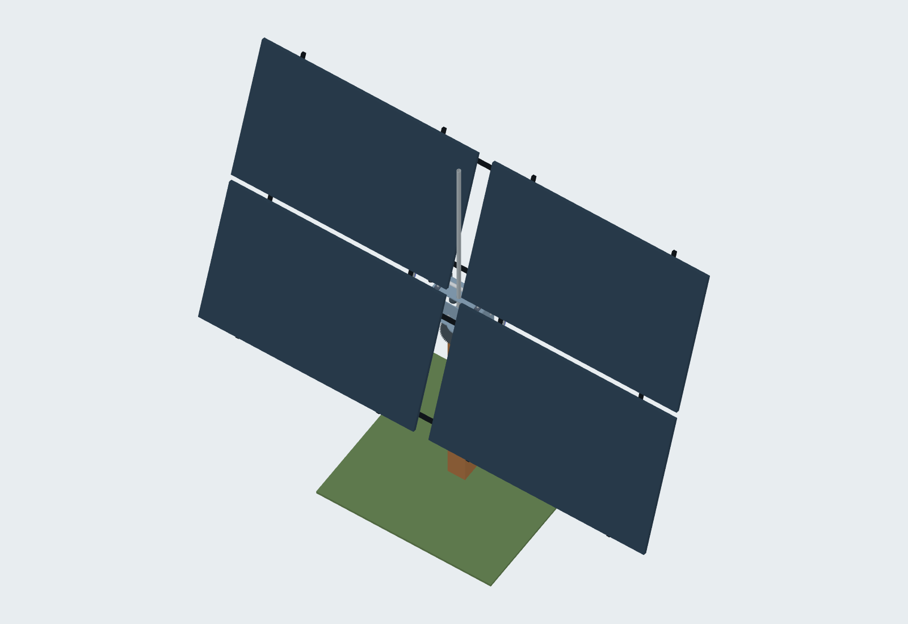
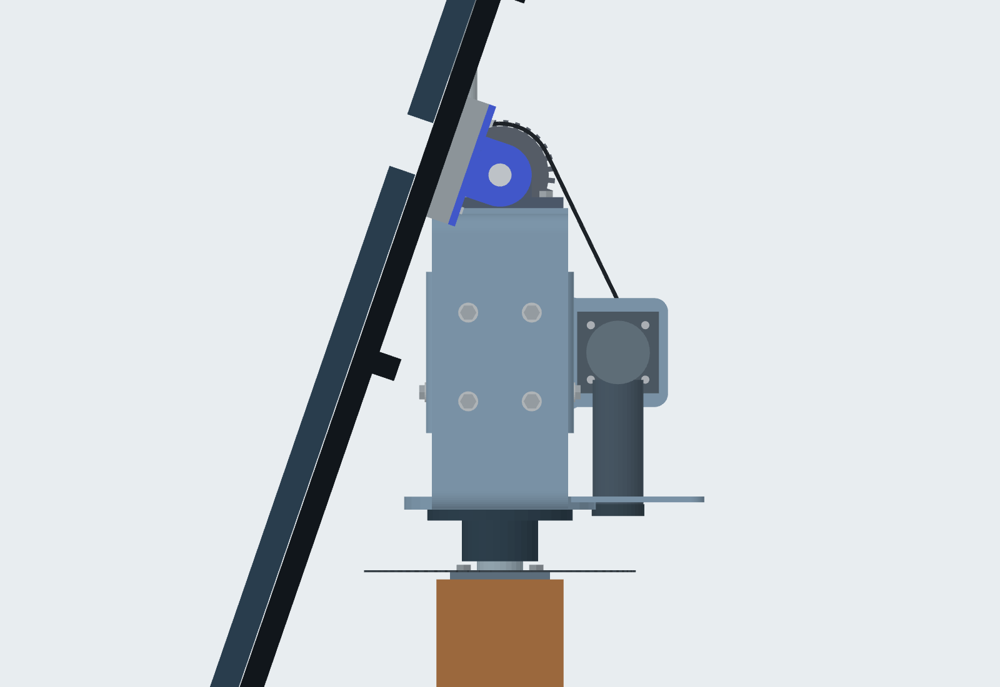

Four-Panel Solar Tracker
A hardware concept for a two-axis tracker built around four owned solar panels, an upright trailer spindle and hub, a fabricated steel bearing bracket, and an aluminum square-tube panel frame.
Early CAD and layout study. The panels and trailer hub kit are owned or selected, but the tracker has not been built or load-tested. The shaft, bearings, motor, sprockets, chain, frame sections, fasteners, and most mounting details remain provisional.
Current layout
- Four panels arranged in two rows and two columns. Each panel is 45 × 68 in, with the 68-in side horizontal. Exact panel model and mass are pending.
- Clear gaps are 120 mm between columns and 60 mm between rows. The row gap accommodates two clamps extending 30 mm from their panel edges.
- Four continuous vertical aluminum square tubes and four horizontal rails support the panels. The model uses 25.4 mm outside dimensions as a starting proxy; wall thickness and connections are open.
- A nominal 1-in tilt shaft runs across the frame. Custom moving clamp proxies sit 720 mm apart; two support bearings sit 320 mm apart inside them.
- The viewing faces point upward at Wind 0°. Winter 71° is the Tacoma winter-facing layout position. These are preview positions, not verified operating limits.

The render shows the four-panel array, continuous frame rails, mast, and raised pivot bracket in the current winter layout.
Pivot bracket and tilt drive
The pivot uses a trailer hub and upward-facing spindle mounted in a ground-set 6×6 post. A round steel interface plate sits on the hub. The bracket concept raises two bearing pads above that plate, with bolt-on side gussets and two mast bridge plates.
A provisional right-angle geared motor attaches to the inside face of one bracket riser. Its body hangs downward; its output shaft passes outward through the motor plate. A 12-tooth motor sprocket drives a 28-tooth sprocket on the tilt shaft with a bicycle-chain loop. A separate large sprocket is shown at the fixed spindle flange for a future pan drive. Preview pan travel is limited to 180° total.

Interactive model
Open the interactive four-panel assembly viewer
Use Winter 71°, Wind 0°, or the tilt slider. The View list controls visible assemblies; the bill of materials lists modeled parts and quantities. Choose Tilt drive to focus on the provisional motor and chain. The OpenSCAD shape study is editable. Dimensions and simplified geometry are design inputs, not fabrication drawings.
Modeled bill of materials
| Assembly | Quantity | Current status |
|---|---|---|
| 45 × 68-in solar panels | 4 | Owned; exact model and mass pending |
| 6×6 post and trailer hub/spindle | 1 each | Hub kit selected; load path unverified |
| Bent hub and bearing bracket | 1 | Shape study; dimensions and strength unverified |
| Bolt-on side gussets | 2 | Provisional steel plates |
| Tilt support bearings | 2 | Not purchased |
| 1-in tilt shaft | 1 | Planned; not purchased or checked |
| Custom moving clamps and spacers | 2 each | Proxies; fastening not designed |
| Aluminum square-tube frame | 8 members | 25.4-mm outside-size proxy |
| Right-angle tilt gearmotor | 1 | Placeholder; no motor selected |
| Tilt sprockets and chain | 2 sprockets, 1 loop | Provisional 12/28-tooth layout |
| Fixed pan sprocket | 1 | Placeholder on spindle flange |
| Wind mast and bridge plates | 1 mast, 2 plates | Placeholder; mast and sensor open |
Design status and next work
This model helps review layout and component relationships. It does not establish structural capacity, wind survival, actuator torque, bearing life, foundation adequacy, or safe operating limits.
Before fabrication, the design needs exact panel data, measured hub and spindle interfaces, chosen bearings and shaft, selected motors and chain, actual aluminum tube sections, fastener patterns, and load calculations for the panels, bracket, post, and foundation. The 60-mm panel-clamp seam and modeled clearances also need confirmation against the physical hardware.